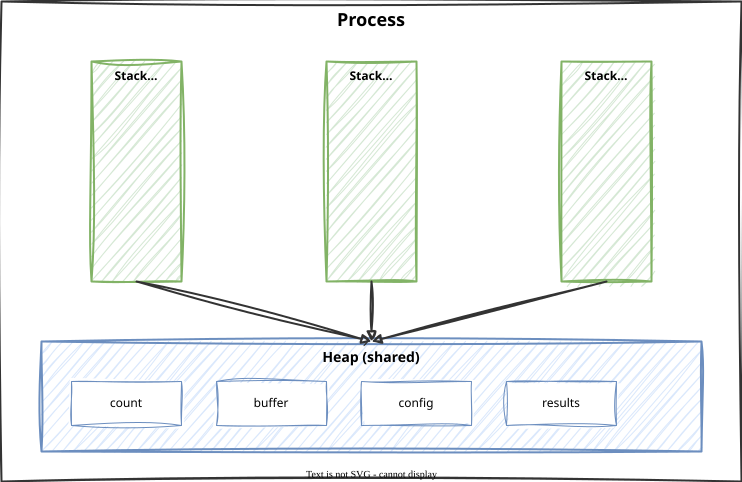

Processes vs. Threads
Module 1: Concurrency
Session 2 · Wed Sep 2
Processes vs. Threads
Recap: One Kitchen, Many Cooks
Last session: parallel = one kitchen, many cooks, sharing the same counters and stove.
Today we make that literal:
- Process = a kitchen staff — its own space, its own equipment, its own ingredients
- Thread = a cook working inside that kitchen
- Core = the kitchen itself, or more precisely, the counters, where all the cooking happens
Everything for the next three weeks is about what happens when multiple cooks share one kitchen.
Processes vs. Threads
- A process = a running program with its own memory space — the kitchen staff.
- A thread = a lightweight unit of execution within a process — a cook. A process can contain many threads, just like a kitchen can employ many cooks.
- Threads in the same process share memory — this is both powerful (cooks can hand ingredients to each other instantly) and dangerous (two cooks can grab the same thing at once).
Processes vs. Threads — Side by Side
| Process | Thread | |
|---|---|---|
| Memory | Own, private space | Shared with sibling threads |
| Creation cost | High — a whole new kitchen staff | Low — hire another cook and add to the existing kitchen staff |
| Communication | Complex (must send messages between kitchens) | Easy but risky (just reach for the shared counter) |
- Memory is the difference everything else follows from: separate spaces vs. one shared space.
- Creation cost is why real programs prefer threads when they can — spinning up a process is expensive.
- Communication: “complex” vs. “easy but risky” are the two phrases that matter. The risky half of that last cell is exactly what Session 3 is about.
Stack and Heap
A running program is loaded into RAM with its own code, heap, and stack.

Connecting to Computer Organization
You already know a running program has a code segment, a heap, and a stack. Threads change exactly one part of that picture.
- A process is exactly that instance — one program, loaded once, with one code segment, one heap, one set of open resources.
- A thread inside that process reuses the same heap — that’s the shared kitchen counter, the same memory every thread in the process can read and write.
- But each thread gets its own stack — its own private scratch space for local variables and function-call frames. This is the same stack you already know from comp org; the only change is there’s now one stack per cook, not one per kitchen.
Local Variables Are Safe. Shared Variables Are Not.
Tip
This is why two threads can run the same method at the same time without their local variables colliding — each has its own stack frame for that call — while still being able to corrupt a variable declared outside any method (a shared/global variable, living on the heap).
Local variables are safe by default. Shared variables are not.
That one sentence is the entire reason race conditions exist, and you’ll see it proven directly in Session 3.
Why Bother With Threads?
Two cooks in the kitchen: one chops vegetables while the other stirs the pot. Same wall-clock time, more gets done.
There are two distinct reasons real programs reach for threads:
- Waiting on something. A cook standing at the oven doing nothing while a timer counts down is wasted time — they could be chopping vegetables instead. Likewise, a thread waiting on a network reply or a disk read can step aside and let another thread use the CPU instead of it sitting idle.
- More hands, more work. Four cooks each grilling one dish finish four dishes in the time it takes one cook to finish one — genuine parallel speed-up. A CPU with multiple cores can run multiple threads at the literal same instant, not just take turns quickly.
Why Bother With Threads? — In Real Software
Both reasons show up constantly:
- A web server handling thousands of simultaneous requests is mostly “waiting on something” — each request waits on a database.
- A program crunching a large computation across all your CPU’s cores is “more hands, more work.”
Threads in Java — Option 1: Extend Thread
- Subclass
Threadand overriderun()with the work you want done. - Start it with
new MyThread().start(). - Works, but it ties your class to
Thread— your class can no longer extend anything else, and “the work” and “how it’s run” are welded together.
Threads in Java — Option 2: Implement Runnable (preferred)
- Pass the work to
new Thread(...)instead of subclassing. Your code stays independent of how it’s run. () -> { ... }is a lambda — shorthand for “here is a block of code, treat it as a value.” Read it as: “a nameless block of code that, when run, prints the message.”- Handing that block to
new Thread(...)says “run this on a new thread.”
Threads in Java — The Four Methods
new Thread(...)— creates the thread object. Nothing is running yet.start()— actually launches the new thread. This is the only line that creates concurrency.join()— makes the calling thread wait until this one finishes, before continuing.run()— the code the thread executes. Never callrun()directly — the next slide shows exactly why.
Tracing It: What Actually Happens
Five steps. What does each thread do at each one? (next slide)
Tracing It: Step by Step
| Step | Main thread | New thread t |
|---|---|---|
| 1 | new Thread(...) creates t, not yet running |
doesn’t exist yet |
| 2 | t.start() launches t, returns immediately |
starts running, prints “Hello from lambda” |
| 3 | t.join() — main pauses here and waits |
keeps running to completion |
| 4 | t finishes → main resumes |
terminated |
| 5 | prints “Main thread continues” | — |
Tracing It: The Key Takeaway
Notice step 2: start() doesn’t wait for the new thread to do anything — it hands off the work and returns control to main immediately.
The two threads are now running at the same time, until join() in step 3 forces main to pause and wait.
The run() vs. start() Bug
The most common bug in this whole module
t.run() does not create a new thread. It calls the method exactly like any normal function call — on the current thread, in program order, right where you called it. You’ll see printed output and it may even look correct, but no concurrency happened at all.
t.start()→ a genuinely new cook enters the kitchen and starts working alongside everyone else.t.run()→ you did the cooking yourself, in your own normal sequence, then moved on. No new cook, no overlap, no concurrency.- Rule to memorize: you call
start(), Java callsrun()for you, on the new thread. You should almost never write.run()in your own code.
The Thread Lifecycle — The Five States
NEW → RUNNABLE → (RUNNING) → TERMINATED
↕
BLOCKED/WAITING| State | Kitchen equivalent |
|---|---|
| New | Recipe written, cook hasn’t arrived yet |
| Runnable | Cook clocked in, ready to work, waiting for a free stove |
| Running | Cook actively cooking |
| Blocked/Waiting | Cook paused — waiting on the oven timer, a lock, or sleep() |
| Terminated | Dish plated, cook leaves |
The Thread Lifecycle — How a Thread Moves Through It
![A left-to-right state diagram with 5 nodes, each a labeled box paired with a small kitchen icon: New (a recipe card icon) to Runnable (a cook standing, clocked-in badge) to Running (a cook actively at the stove, motion lines) to Terminated (a cook walking out, plated dish icon). A Blocked/Waiting node (a cook standing still with a clock icon) is positioned below Running, with a two-way arrow connecting Running ⇄ Blocked/Waiting to show threads bouncing between those two repeatedly before reaching Terminated.](images/runnable-states.png)
Every thread you create moves through these states.
new Thread(...)puts it in New;start()moves it to Runnable;- it becomes Running only when it actually gets to execute;
- and it can bounce between Running and Blocked/Waiting many times before reaching Terminated.
Who Decides When a Thread Runs?
Warning
Who decides when a Runnable cook actually gets the stove and becomes Running? Not you, not your code — something outside your control. That single fact is the root cause of almost every bug in this module.
- You can ask a thread to start. You cannot control exactly when it gets CPU time, or how its execution interleaves with other threads.
- This means the same program can produce different results on different runs — not because the code is wrong, but because the timing of “whose turn it is” isn’t something your code decides.
- Hold onto this. Session 3 is entirely about what goes wrong when two threads touch the same shared data and you have no control over whose turn comes first.
Lab 1 Preview: The Race Condition Game
- Observe a race condition happen in real code.
- Two threads both increment a shared counter 10,000 times each.
- Expected result: 20,000. Actual result: often less — and it changes between runs.
- You’ll observe it happen, then fix it, and be able to explain why the fix works.
Lab 1 is this Friday (Sep 4).
COSC420 · Module 1 · Concurrency